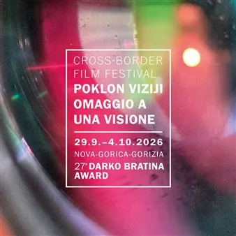

da mar 29 set a dom 4 ott · dalle 19:30
Festival cinematografico transfrontaliero Omaggio a una visione / Poklon viziji
Il festival, organizzato da oltre venticinque anni dall’associazione Kinoatelje, trasforma sale, piazze e spazi urbani sul confine italo-sloveno in luoghi d’incontro: tra cineasti e pubblico, tra lingue, memorie e sguardi diversi sul mondo. Il festival aprirà martedì 29…
 Indicazioni
Indicazioni
- Costi e prenotazioni
- Costo non indicato · Prenotazione non indicata
- Programma
- Programma da verificare. Apri la fonte ufficiale per orari e possibili aggiornamenti.
- In caso di maltempo
- Nessuna indicazione specifica pubblicata.
- Note
- Acquisito automaticamente dalla fonte.
L’EVENTO
Descrizione completa
Il festival, organizzato da oltre venticinque anni dall’associazione Kinoatelje , trasforma sale, piazze e spazi urbani sul confine italo-sloveno in luoghi d’incontro: tra cineasti e pubblico, tra lingue, memorie e sguardi diversi sul mondo.
Il festival aprirà martedì 29 settembre alle 19.30 al Kulturni dom Nova Gorica con la prima del nuovo film della fotoreporter e regista slovena Manca Juvan – La valle del mio respiro (Dolina mojega vdiha). Chiuderà invece domenica 4 ottobre alle 19.00 all’ EPICenter (Kolodvorska pot 10, Nova Gorica) negli spazi inaugurati nell’ambito di GO! 2025 con il film White Lies dell’artista e regista triestina Alba Zari.
L' evento centrale del festival sarà venerdì 2 ottobre 2026 alle 20.00 al Palazzo del Cinema – Hiša filma / Kinemax (Piazza della Vittoria 41, Gorizia) con il conferimento del 27° Premio Darko Bratina alla regista rumena Alexandra Gulea e dei premi per la sezione studentesca First Crossings. A seguire il corto studentesco vincitore e l’ultimo lungometraggio di Gulea “Maia – Ritratto con mani”.
I protagonisti delle altre giornate saranno voci critiche e artisti che vedono nel cinema un mezzo di riflessione, ricerca e immaginazione. Tra loro João Nicolao (Portogallo), Roberto Carro (Italia), Stefan Kruse (Danimarca), Jukka-Pekka Laakso (Finlandia) e Alessandro Comodin (Italia).
Tra gli ospiti anche Rajko Muršič (Università di Ljubljana) e Carmelo Marabello (Università Iuav di Venezia) per un incontro sul pedagogista e regista Fernand Deligny; Andrea Peraro (Cineteca di Bologna), Gaetano Martino (Cineteca Lucana), I gor Saračević (Split Screen) e Jurij Meden (Avstrijski filmski muzej) per una tavola rotonda sulla distribuzione; e rappresentanti del Parco Basaglia e del Museo sloveno della Follia per una riflessione sulla trasformazione di questi spazi oggi.
Per soli 10€ puoi richiedere il tuo KINOlasciapassare e ottenre così l'accesso al programma Extra del festival e a sconti speciali per vivere un' esperienza culturale a 360° dell'area transfrontaliera e del festival Omaggio a una visione.
Vi aspetta una settimana di film selezionati con cura, conversazioni entusiasmanti e serate che durano fino al mattino!
Tutti gli eventi sono ad entrata gratuita. Scopri tutto il programma su poklonviziji.com/it
IL PROGRAMMA
Programma e orari
Appuntamenti raccolti dalle fonti elencate. Dove manca un orario, non è ancora disponibile in questa scheda.
Programma pubblicato
- 20.00 al Palazzo del Cinema – Hiša filma / Kinemax
INFORMAZIONI UTILI
Prima di partire
- Controllare la fonte prima di partire.
ORGANIZZAZIONE